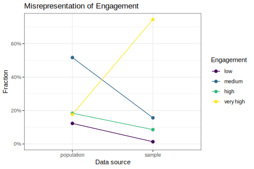
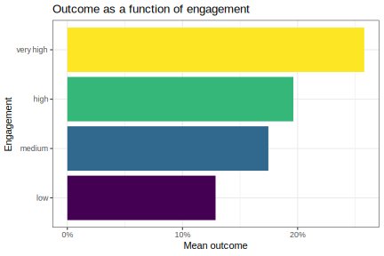
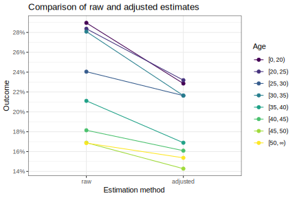
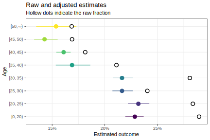
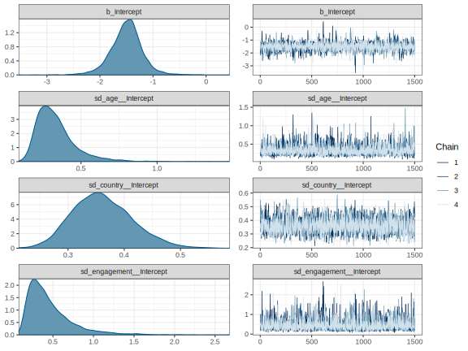

Responses on your platform are dominated by your most engaged users!
Collect data without selection bias!
BEFORE launching the survey:
Multilevel Regression: the response is modelled conditional on the demographic cells.
Poststratification: average the above probabilities weighted by the cell-proportion in the general population.
Multilevel Regression: \[\mathbb P (Y \mid A, E, S = 1) \approx \mathbb P (Y \mid A, E)\]
Poststratification: \[\mathbb P(Y \mid A) = \sum_e \mathbb P (Y \mid A, E = e) \mathbb P (E = e \mid A)\]
\(E = \{ \text{engagement, country} \}\)
\(A = \{ \text{age} \}\)
\[ \mathbb P (Y \mid \text{do}(A = a)) \\ = \sum_{e} \mathbb P (Y \mid A = a, E = e, S = 1) · \mathbb P (E = e) \]
\[ \mathbb P (Y \mid A = a) \\ = \sum_{e} \mathbb P (Y \mid A = a, E = e, S = 1) · \mathbb P (E = e \mid A = a) \]
\[ \begin{align} & \mathbb P (Y) \\ &= \sum_A \mathbb P(Y \mid A ) \cdot \mathbb P (A ) \\ &= \sum_{A, E} \mathbb P (Y \mid A, E, S = 1) · \mathbb P (E \mid A) · \mathbb P (A) \\ &= \sum_{A, E} \mathbb P (Y \mid A, E, S = 1) · \mathbb P(A, E) \end{align} \]
model <- brms::brm(
family = binomial(),
formula = outcome | trials(n) ~ 1 + # grand mean
(1 | age) +
(1 | engagement) + (1 | country),
prior = c( # priors on logit scale
prior(normal(-1, 3), class = "Intercept"),
prior(normal(0, 1), class = 'sd')
),
data = df %>%
group_by(continent, country, engagement, age) %>%
summarise(outcome = sum(outcome), n = n()),
# other
cores = 4,
chains = 4,
warmup = 1500,
iter = 3000,
control = list(adapt_delta = 0.995), # gets rid of divergences
seed = 34695, # https://www.random.org/integers/?num=1&min=1&max=100000&col=5&base=10&format=html&rnd=new
file = here('models/age_engagement_country') # cache the trained model
) poststratify <- function(weights, model, given, ...) {
weights %>%
mutate(n = 10000) %>% # binomial model needs number of trials, n
tidybayes::add_predicted_draws( # make predictions
model,
allow_new_levels = TRUE, # some cells not observed!
prediction = 'k', # number of successful trials
...
) %>%
group_by(!!!syms(given), .draw) %>%
summarise(probability = sum(weight * k / n))
}
Let \(G\) be a graph where nodes in \(T\) are measured in both sample and population, and nodes in \(M\) only in the sample. Then nodes \(Z\) are said to satisfy the s-backdoor criterion relative to \((X, Y)\) if
where \(Z_D := Z \cap \text{Desc}(X)\) and \(Z_O := Z - Z_D\).

Divergences:0 of 6000 iterations ended with a divergence.
Tree depth:0 of 6000 iterations saturated the maximum tree depth of 10.
Energy:E-BFMI indicated no pathological behavior.
Family: binomial
Links: mu = logit
Formula: outcome | trials(n) ~ 1 + (1 | age) + (1 | engagement) + (1 | country)
Data: df %>% group_by(continent, country, engagement, ag (Number of observations: 1278)
Samples: 4 chains, each with iter = 3000; warmup = 1500; thin = 1;
total post-warmup samples = 6000
Group-Level Effects:
~age (Number of levels: 8)
Estimate Est.Error l-95% CI u-95% CI Eff.Sample Rhat
sd(Intercept) 0.33 0.13 0.16 0.67 1712 1.00
~country (Number of levels: 143)
Estimate Est.Error l-95% CI u-95% CI Eff.Sample Rhat
sd(Intercept) 0.36 0.05 0.27 0.47 2025 1.00
~engagement (Number of levels: 4)
Estimate Est.Error l-95% CI u-95% CI Eff.Sample Rhat
sd(Intercept) 0.46 0.28 0.15 1.22 1992 1.00
Population-Level Effects:
Estimate Est.Error l-95% CI u-95% CI Eff.Sample Rhat
Intercept -1.50 0.31 -2.13 -0.89 1686 1.00
Samples were drawn using sampling(NUTS). For each parameter, Eff.Sample
is a crude measure of effective sample size, and Rhat is the potential
scale reduction factor on split chains (at convergence, Rhat = 1).